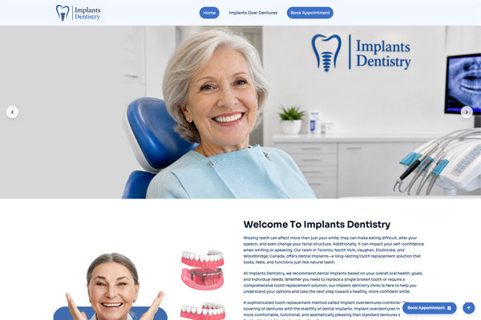
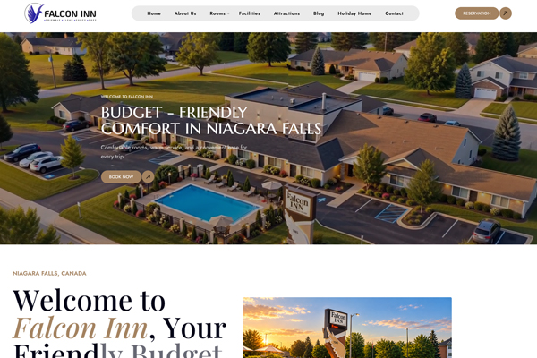
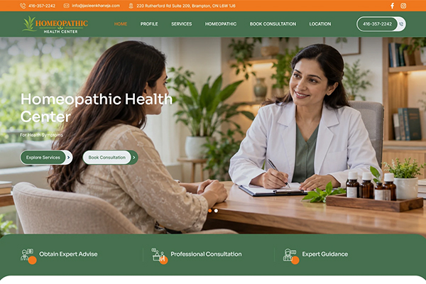
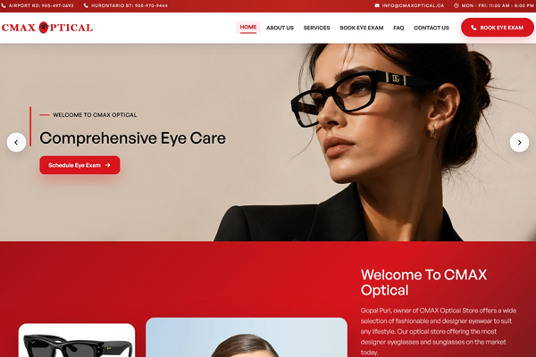
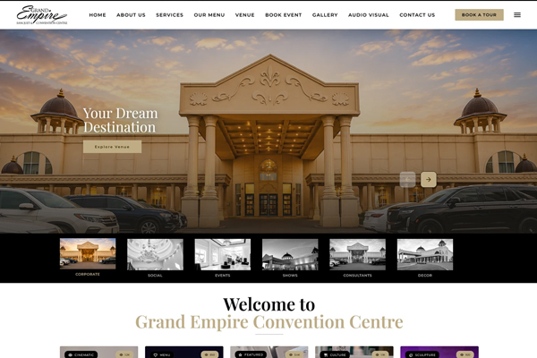
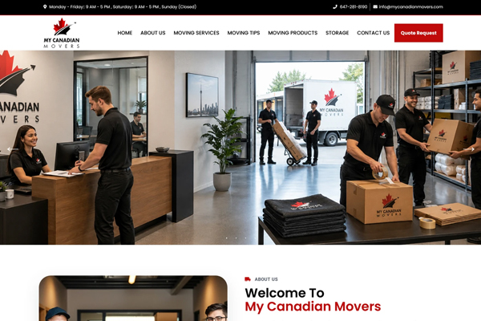

Available for senior web / UI-UX opportunities
Senior Web Designer
AI & UX Strategy
I bridge visual design, usability and front-end production—taking websites from client discovery and structure through responsive build, testing, deployment and ongoing support.
0+Years across design & web production
0+Web projects delivered in an earlier role
0Team members led
360°Analyse → design → build → test → deploy
Selected work
Design that moves
into production.
Selected projects from Behance, organized to show range across healthcare, hospitality, education and B2B service websites.
Featured

Motel / Inn

Medical Consultation

Optical

Conventional / Banquet Hall

Moving Services
How I work
Senior UX thinking. Clear strategy. Strong execution.
01
Discover
Understand business goals, user needs, product challenges, competitors, and existing data to define the right problem before designing.
02
Define
Turn research into clear user journeys, information architecture, priorities, requirements, and measurable experience goals.
03
Design
Create wireframes, high-fidelity interfaces, design systems, responsive experiences, and interaction patterns built around usability and clarity.
04
Prototype
Build realistic prototypes to validate flows, interactions, edge cases, and complex product behaviour before development begins.
05
Validate & Refine
Test with users and stakeholders, analyse feedback and product data, improve usability, and continuously refine the experience after launch.
Dec 2021 — Present
Senior Web Developer
Tas Technologies · Canada · Remote
- Responsive website delivery across hospitality, banquet venues, logistics, vet clinics and healthcare.
- Translate client and business requirements into production-ready websites.
- Support usability testing, deployment, updates, user research and workflow analysis.
Mar 2020 — Jun 2021
Web Developer
Techitalents · Bengaluru
- Front-end and back-end delivery for educational websites using PHP, JavaScript and HTML.
- Owned projects from design and requirements through completion and delivery.
May 2012 — Feb 2020
Webmaster
Experions Pvt Ltd · Bengaluru
- Web production, hosting, deployment, availability and maintenance across multiple industries.
- Root-cause analysis and corrective action for production issues.
- Led 5 designers and 2 junior coders.
Nov 2010 — Dec 2011
Web Designer
Kavinsoft Solutions · Coimbatore
- Completed development, deployment and delivery of 50+ web projects.
- Trained and mentored two junior team members.
Capabilities
Design expertise.
Built for real products.
I combine UX strategy, UI design and front-end experience to create digital products that are clear, usable and ready for production.
UX & Product Design
From early discovery to final delivery, I turn user needs and business goals into simple, effective digital experiences.
UX Research
UI Design
User Flows
Information Architecture
Responsive Design
Usability Testing
Rapid Prototyping
Design Systems
Stakeholder Collaboration
Team Leadership
Design & prototyping
Fast, thoughtful design from concept to high-fidelity prototype.
FigmaPhotoshopInDesignAdobe Creative Suite
Front-end
I understand how designs are built, helping me create practical interfaces that work across devices.
HTMLCSSJavaScriptjQueryTailwind CSS
CMS & development
Hands-on experience building and supporting production websites.
PHPMySQLCMS
Web operations
Experience beyond launch — from deployment to ongoing improvement.
DeploymentHostingTestingMaintenance
Recent learning
Still sharpening
the craft.
Recent professional development supports a stronger UX, Agile and AI-enabled design narrative.
Sep 2026
Generative AI: The Future of UX UI Design
SkillUp via Coursera
Sep 2026
UX/UI Design Fundamentals: Usability and Visual Principles
SkillUp via Coursera
Aug 2026
Introduction to Agile Development and Scrum
IBM Skills Network via Coursera
Jul 2026
Introduction to UX/UI Design
IBM Skills Network via Coursera
Looking for a senior designer who can take ideas from strategy to launch?
I bring 16+ years of experience across UX, UI, front-end and web delivery — creating digital experiences that are thoughtful, practical and ready for the real world.